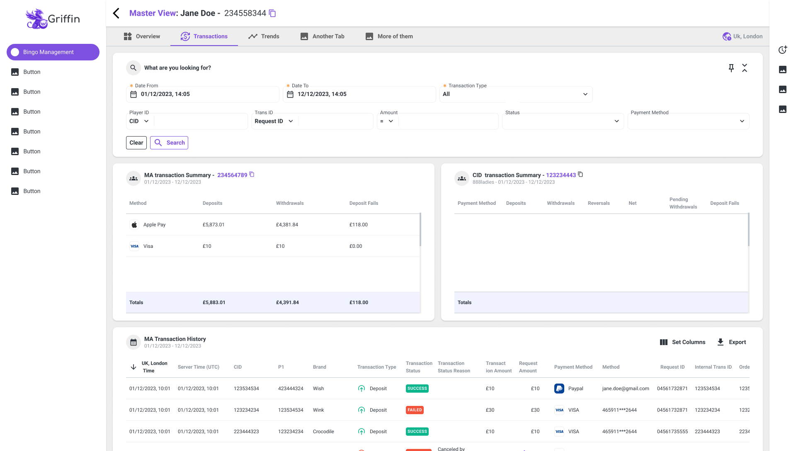
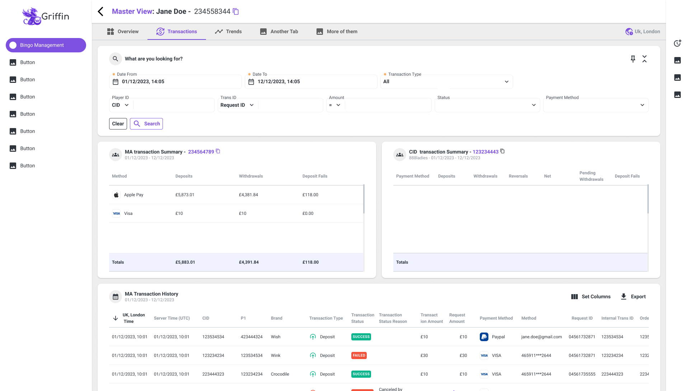

Griffin
Strategic Operations Platform - UX Case Study

Strategic Operations Platform - UX Case Study
Griffin is a strategic operations platform that centralizes cash flow management, transaction oversight, customer management, and marketing campaign execution into a single, unified system.
Built to support business-critical workflows, Griffin enables real-time collaboration across teams, providing clarity, control, and consistency in complex operational environments. Its design prioritizes transparency, scalability, and usability, empowering organizations to make informed decisions and manage risk with confidence.
Before Griffin was developed, the business relied on a legacy in-house platform combined with multiple external tools to extract and analyze key metrics. This ecosystem was primarily designed for data visualization, offering limited interactivity and a non-intuitive user interface.
Information architecture was fragmented and difficult to navigate, making it challenging for users to understand relationships between data sets. As a B2B organization managing multiple platforms and sites, the lack of a clear and scalable hierarchy became a critical issue.
Operational complexity increased, workflows were inefficient, and onboarding new employees required extensive training - often taking several months depending on the department.
These limitations highlighted the need for a unified, user-centered system capable of supporting complex structures while remaining accessible and efficient.
One of the more atypical challenges was identifying and preserving the core value of the legacy platform, while simultaneously removing its rigid structure and unfriendly interface. This required a deep understanding of existing workflows to ensure that critical functionality was retained without carrying over outdated design patterns or constraints.
Another key challenge was determining which capabilities needed to be consolidated into the new platform in order to reduce dependency on multiple external tools. This involved designing a clear, scalable hierarchy and information architecture capable of supporting heavy data and complex metrics, while remaining intuitive and easy to navigate.
A central design goal was to introduce robust editing and configuration capabilities across the platform. Each page required a tailored design and interaction model to support its specific use case, yet the overall experience needed to remain cohesive, consistent, and aligned with a unified design system.
The process began with a comprehensive audit of the legacy in-house platform and the surrounding ecosystem of tools. The goal was to identify the platform's true core value, understand critical business workflows, and uncover usability and structural pain points.
Special attention was given to how data, hierarchy, and permissions were handled across multiple managed sites.

During this phase, we identified the need for a dual-branch architecture to support the platform's complexity and the differing needs of internal teams.
This led to the definition of two distinct modes of interaction:
This distinction became foundational to the platform's information architecture and interaction model.
We collaborated closely with stakeholders across multiple departments to gain a deep understanding of real user needs and overarching business objectives. As a B2B product, special attention was given to user roles, access levels, and the differences between operational, managerial, and executive users.
Key insights from this phase revealed that even experienced platform users struggled at times to quickly locate relevant information. Data-heavy tables were difficult to scan and interpret efficiently, increasing cognitive load and slowing down decision-making.
Additionally, the lack of filtering capabilities made it challenging for users to isolate relevant data. When issues needed to be flagged or escalated, users often spent hours navigating the platform or coordinating with other teams just to initiate interaction.
As a result, we introduced direct interaction within data tables, enabling users to act immediately on specific entries, and designed page-specific filtering sections to support faster data discovery, clearer insights, and more efficient cross-team collaboration.

Low-fidelity wireframes were used to rapidly explore layouts, navigation patterns, and interaction models - especially for data-heavy views. This stage allowed for early validation of assumptions and ensured that usability and clarity were prioritized before moving into visual design.
The key conclusion from this phase was that a single layout pattern could not effectively support all user needs. To accommodate different use cases and data contexts, we defined multiple layout types:
This flexibility enabled the platform to adapt to varying workflows while maintaining consistency and usability.
A key objective of Griffin was to introduce advanced editing and configuration capabilities. We designed flexible page structures that allow users to customize content, metrics, and views based on their specific needs.
Although each page required a tailored approach, all solutions were built on shared interaction principles to ensure consistency across the platform.
This led to the definition of a clear and scalable layout structure:
Once validated, the designs were translated into a cohesive visual language supported by a scalable design system. This ensured consistency across the product, simplified development handoff, and enabled future expansion without sacrificing usability or clarity.
Designs were continuously refined based on stakeholder feedback and usability insights. The final phase focused on clear documentation and close collaboration with development teams to ensure a smooth and accurate implementation.


 
